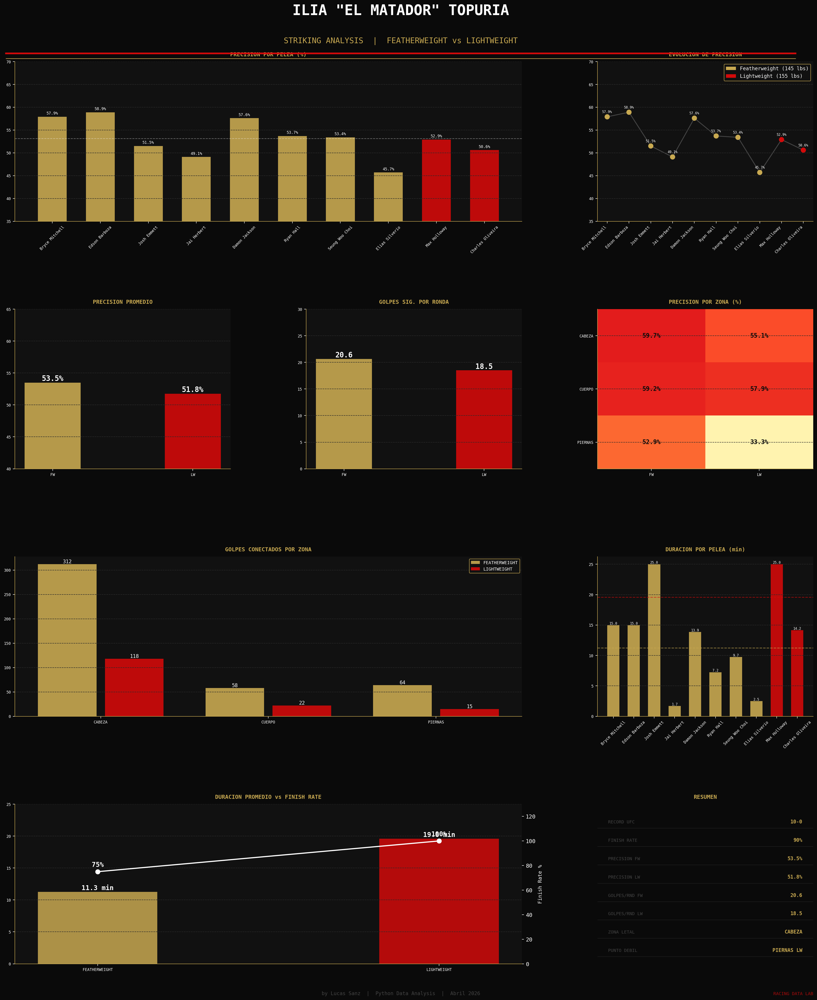

by Lucas Sanz | Python Data Analysis | Abril 2026
ANALISIS COMPLETO

ESTADISTICAS POR PELEA
| RIVAL | CATEGORIA | SIG. STRIKES | INTENTADOS | PRECISION | GOLPES/RND | DURACION |
|---|---|---|---|---|---|---|
| Bryce Mitchell | FW | 55 | 95 | 57.9% | 18.3 | 15.0 min |
| Edson Barboza | FW | 96 | 163 | 58.9% | 32.0 | 15.0 min |
| Josh Emmett | FW | 101 | 196 | 51.5% | 20.2 | 25.0 min |
| Jai Herbert | FW | 26 | 53 | 49.1% | 26.0 | 1.68 min |
| Damon Jackson | FW | 57 | 99 | 57.6% | 19.0 | 13.87 min |
| Ryan Hall | FW | 36 | 67 | 53.7% | 18.0 | 7.25 min |
| Seung Woo Choi | FW | 47 | 88 | 53.4% | 15.7 | 9.73 min |
| Elias Silverio | FW | 16 | 35 | 45.7% | 16.0 | 2.5 min |
| Max Holloway | LW | 110 | 208 | 52.9% | 22.0 | 25.0 min |
| Charles Oliveira | LW | 45 | 89 | 50.6% | 15.0 | 14.15 min |
COMPARATIVA POR CATEGORIA
CONCLUSION
Topuria subio a Lightweight y sus numeros apenas cambiaron.
Con una caida de solo 1.7% en precision enfrentando a
Max Holloway y Charles Oliveira — dos de los mejores en la historia de sus divisiones —
los datos confirman que su boxeo tecnico y preciso trasciende las categorias de peso.
Su zona mas letal sigue siendo la cabeza (55-59%),
mientras que las piernas representan su unico punto debil al subir de division (33.3% en LW).
Con un finish rate del 90%, El Matador no solo golpea con precision — golpea para terminar.